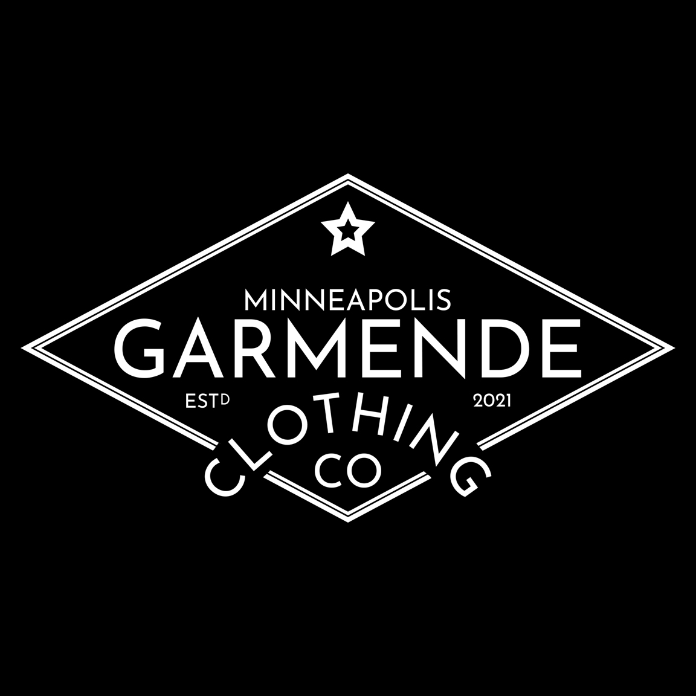
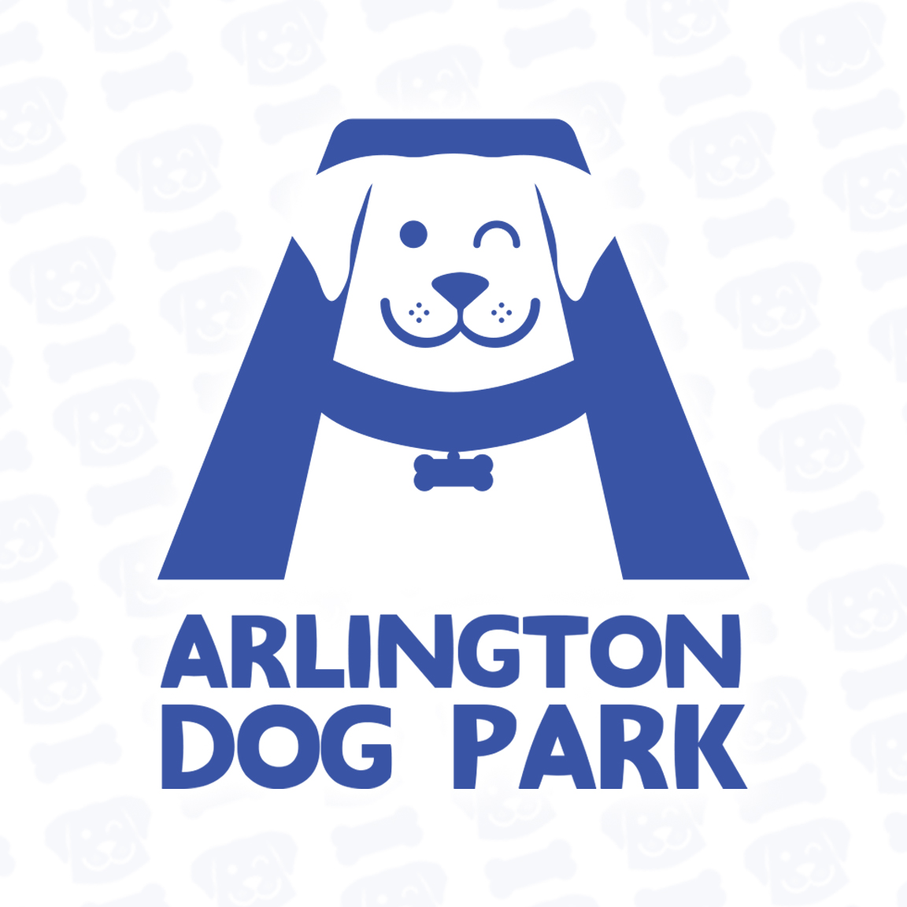
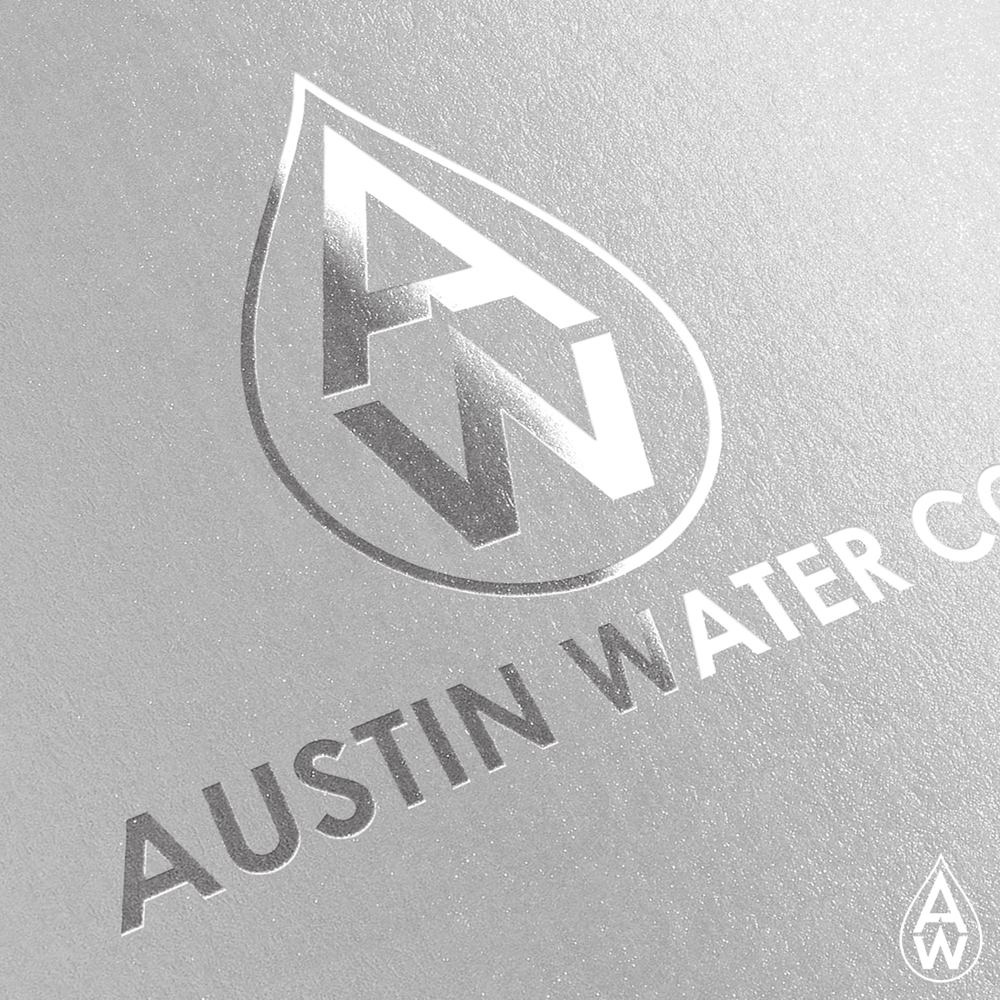
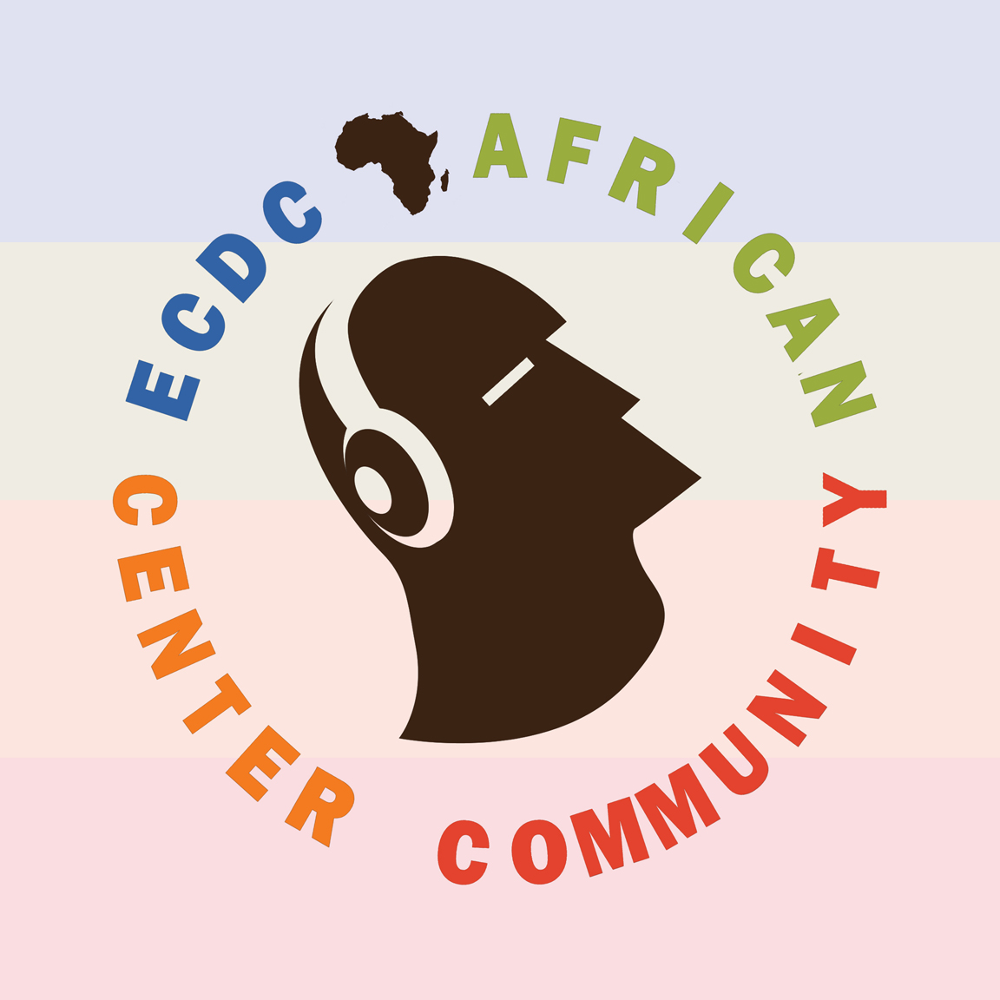
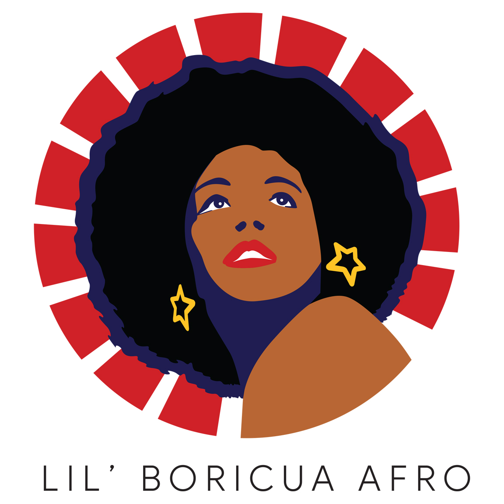
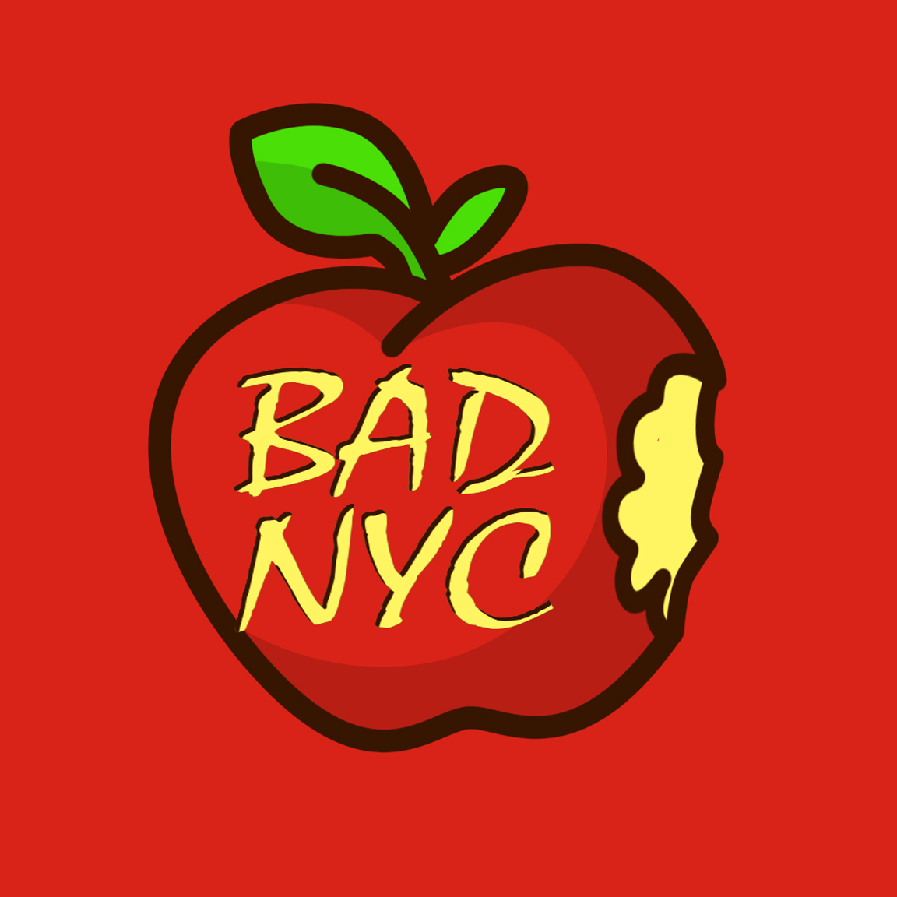
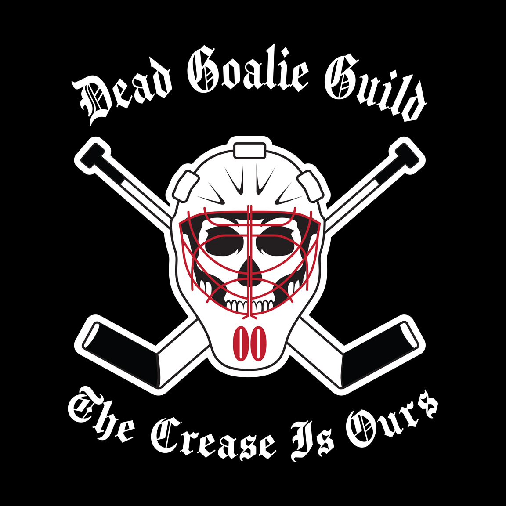
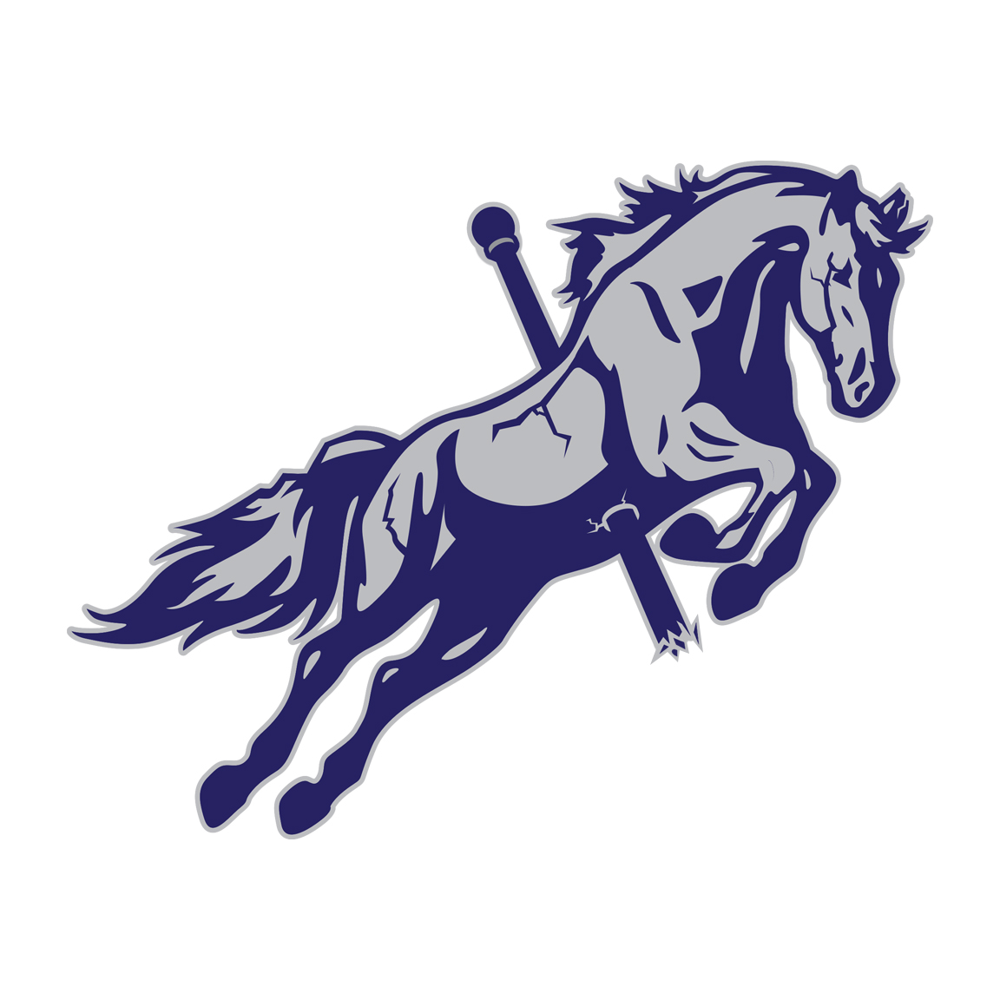
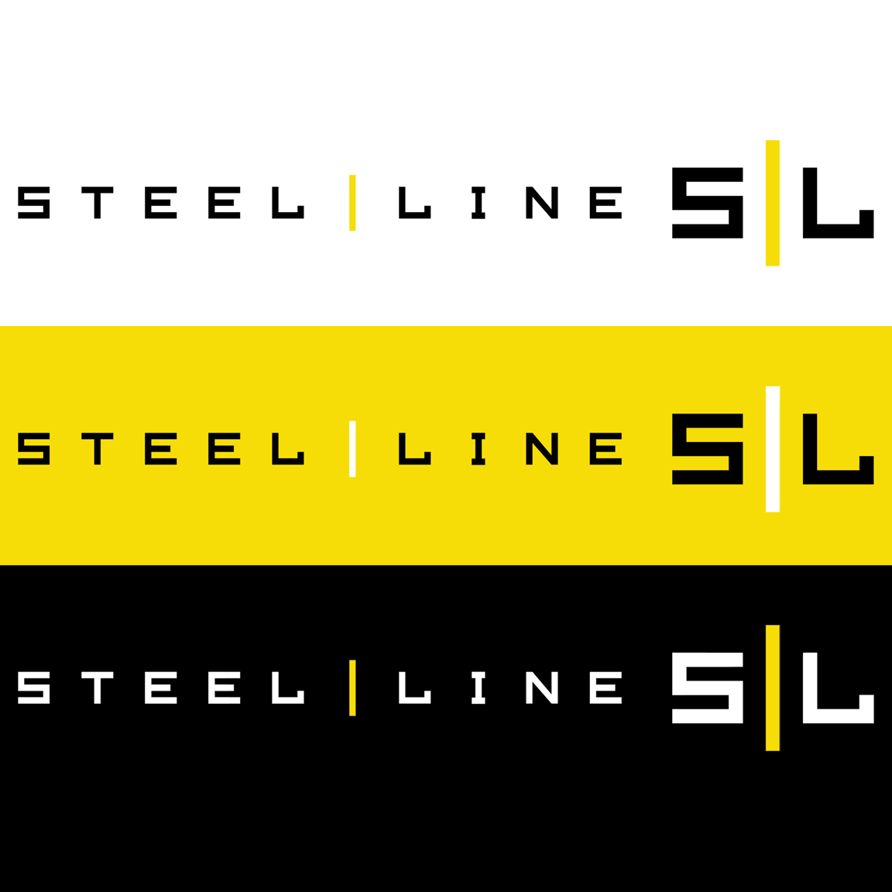
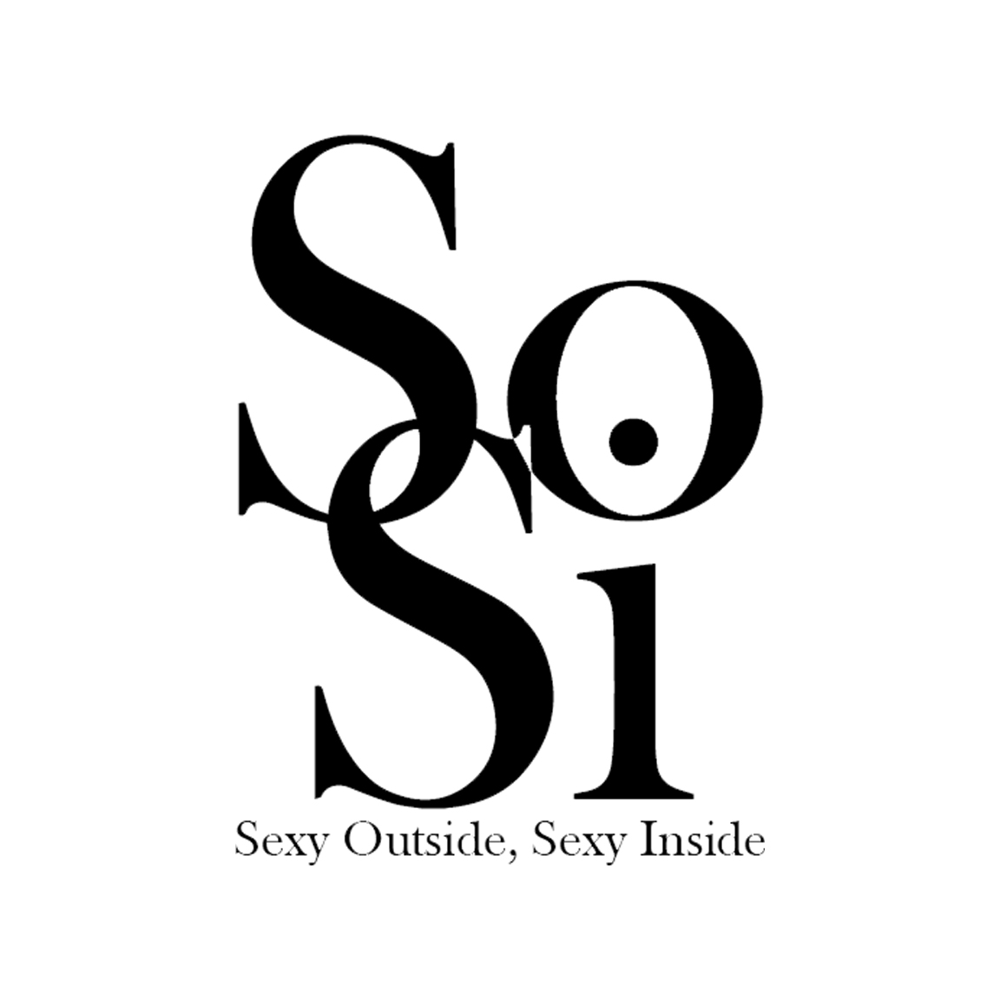

Logo designed for a pop-up clothing store in a Minnesota Mall.
Focus was on high-end brand name fashion for men.

Logo for a simple dog park.
Wanted to create something bright, cheery and simple.

Mockup Logo for Austin Water Co.
A simple design that gets across quickly what they are about, and one that can be used on official letterhead or on the side of a building.

Logo created for the ECDC African Center Community Podcast.
Client wanted simple, but involved the colors of the company.

Logo for Lil' Boriqua Afro.
Customer wanted to have a Black woman for her logo, with an afro and that combined the jewelry she sold as well as Puerto Rico (Lil' Boriqua is a common saying there). The PR flag is represented in the Star earring, and the red stripes with blue shadow.

Logo for Bad Apple NYC, a pop up Korean food truck based in New York City.
Customer wanted slightly cartoony, but simple and usable in red or green.

Logo for The Dead Goalie Guild, a motorcycle club-themed set of branded apparel.
Aimed at hockey fans, in particular current and former goaltenders.

Logo for Broken Carousel. Client wanted the imagery of a formally static carousel horse breaking free and leaping off the platform.
I wanted to convey some damage to the horse, noticable in the cracks and breaks along the body and tail, as well as the splinters.

Logo for Steel Line, a Pittsburgh sports-based e-commerce site.
Client wanted a black and yellow theme, consistant with the Penguins, Steelers, and Pirates colors.
Steel Line was also the name of the Steeler's legendary defensive unit.

Mockup for SoSi, a woman's makeup brand. The idea was classic black and white, but feminine.
SoSi stands for Sexy Outside, Sexy Inside, inspiring confidence in the buyer.
